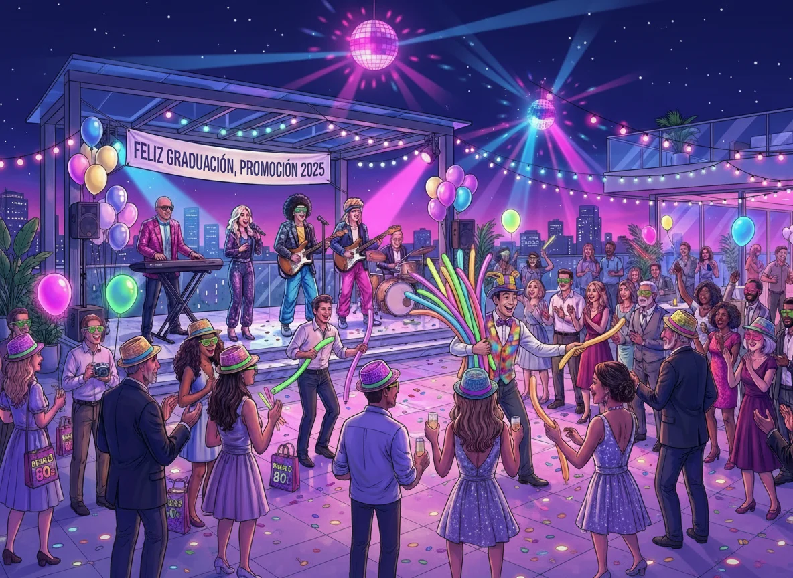

La música en un evento privado no es un elemento decorativo. Es una herramienta funcional que estructura el ritmo, marca transiciones y define la atmósfera. Sin embargo, no todos los eventos privados requieren el mismo enfoque musical. Un aniversario corporativo en un hotel de la CDMX tiene necesidades distintas a una cena familiar en una terraza de Polanco.
Elegir la música adecuada implica entender el propósito del evento, el perfil de los asistentes y las características del espacio. Este artículo ofrece criterios técnicos para tomar decisiones informadas y evitar errores comunes en la selección musical.
Música para eventos sociales privados
Los eventos sociales privados incluyen aniversarios, reuniones familiares, celebraciones de logros personales o cenas íntimas. En estos casos, la música debe ser versátil y adaptarse a diferentes momentos del evento.
- Recepción y cóctel: Música suave, jazz, bossa nova o pop acústico. El objetivo es crear ambiente sin interferir con las conversaciones.
- Cena: Repertorio instrumental o vocal discreto. Baladas, clásicos en versión suave, música lounge.
- Celebración y baile: Música más enérgica, géneros variados según el perfil de los invitados. Pop, rock, salsa, cumbia, música actual.
El formato de grupo versátil universal es ideal para este tipo de eventos, ya que puede adaptarse a cada fase sin necesidad de cambiar proveedores.
Música para eventos corporativos
Los eventos corporativos requieren un enfoque más formal y controlado. La música debe reforzar la imagen de la empresa y mantener un tono profesional.
- Lanzamientos de producto: Música moderna, energética pero no invasiva. El foco está en la presentación, no en la música.
- Cenas de gala: Repertorio elegante, jazz, clásicos instrumentales, música de cámara.
- Fiestas de fin de año: Música festiva pero profesional. Pop, rock suave, música latina, éxitos internacionales.
En eventos corporativos, la coordinación con el equipo de producción es clave. El grupo musical debe integrarse al protocolo sin protagonismo excesivo.
Música para celebraciones formales
Las celebraciones formales (aniversarios de bodas, homenajes, eventos de etiqueta) requieren un repertorio sofisticado y una ejecución impecable.
- Entrada y recepción: Música clásica, jazz elegante, bossa nova.
- Cena: Repertorio instrumental, baladas clásicas, música de cámara.
- Brindis y cierre: Música emotiva, canciones significativas para los homenajeados.
El líder tecladista experto es fundamental en este tipo de eventos, ya que puede ejecutar arreglos complejos y adaptarse a solicitudes específicas en tiempo real.
Música para celebraciones informales
Las celebraciones informales (reuniones familiares, fiestas de cumpleaños, eventos casuales) permiten mayor flexibilidad en el repertorio.
- Ambiente relajado: Pop, rock, música latina, éxitos actuales.
- Baile y diversión: Cumbia, salsa, reggaetón, música de fiesta.
- Solicitudes del público: El grupo debe estar preparado para adaptarse a peticiones espontáneas.
El formato de grupo versátil es especialmente eficiente en este contexto, ya que puede cubrir un amplio rango de géneros sin perder calidad.
Checklist para elegir música según el tipo de evento
- ☐ Definir el propósito del evento (social, corporativo, formal, informal)
- ☐ Identificar el perfil de los invitados (edades, preferencias musicales)
- ☐ Establecer los momentos clave del evento (recepción, cena, baile)
- ☐ Evaluar las características del espacio (acústica, dimensiones, restricciones)
- ☐ Coordinar con el grupo musical el repertorio para cada fase
- ☐ Confirmar la capacidad del grupo para adaptarse a solicitudes en tiempo real
- ☐ Verificar la experiencia del líder musical en eventos similares
Errores comunes al elegir música para eventos privados
- Elegir un repertorio genérico sin considerar el perfil de los invitados
- No coordinar la música con el protocolo del evento
- Contratar un formato musical inadecuado para el tipo de celebración
- No establecer claramente los momentos clave donde la música debe ser protagonista
- Omitir la comunicación previa con el grupo musical sobre expectativas y necesidades
Preguntas frecuentes
¿Cómo se define el repertorio para un evento privado?
Se establece en coordinación con el cliente, considerando el tipo de evento, el perfil de los invitados y los momentos clave del protocolo.
¿Un grupo versátil puede adaptarse a diferentes tipos de eventos?
Sí, el formato de grupo versátil universal está diseñado para cubrir desde eventos formales hasta celebraciones informales con el mismo nivel de profesionalismo.
¿Es necesario música en vivo durante todo el evento?
No siempre. Muchos eventos combinan música en vivo para momentos clave y pistas pregrabadas para ambientación de fondo.
¿Qué ventajas tiene el liderazgo de un tecladista experto?
Permite ejecutar arreglos complejos, adaptarse a solicitudes en tiempo real y mantener la cohesión musical del grupo en todas las fases del evento.
Elegir la música adecuada para un evento privado en la CDMX requiere entender el propósito de la celebración, el perfil de los invitados y las características del espacio. El formato de grupo versátil universal, liderado por un tecladista experto, ofrece la flexibilidad y calidad necesarias para garantizar el éxito musical en cualquier tipo de evento privado.
Para eventos donde la música debe adaptarse a diferentes momentos y perfiles de público, es recomendable considerar formatos profesionales con experiencia comprobada en la Ciudad de México.